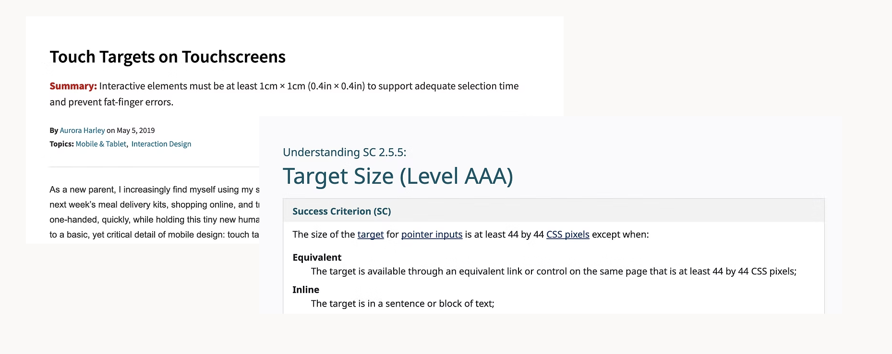
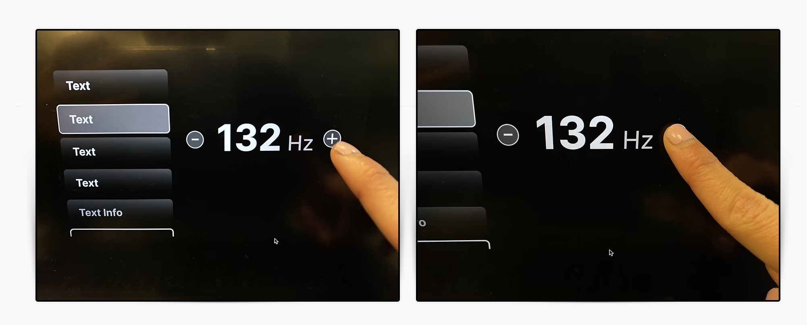
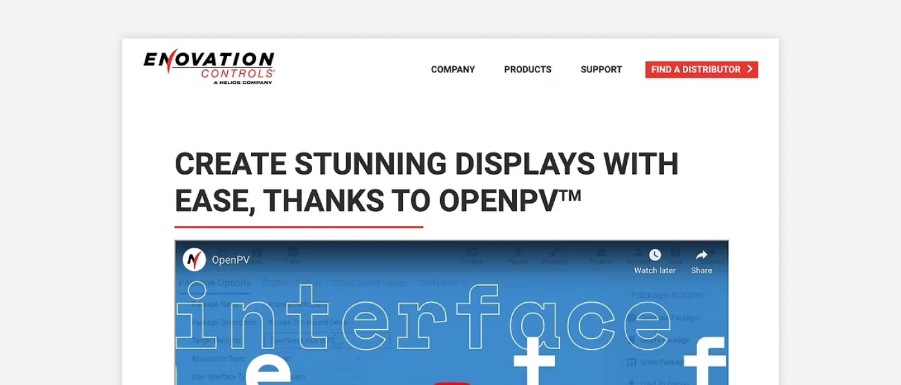
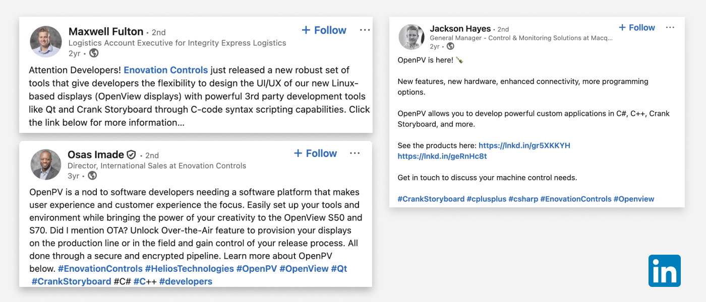

OpenPV Display Design
Enovation Controls is an innovative manufacturer of electronic controls and displays for diverse markets. This project invovled designing a reusable UI template for the OpenPV platform — a toolkit B2B clients use to build and customize their own control displays.

THE MISSION
Designing for a screen no standard guidelines covered
The engineering team built an early The engineering team built a functional prototype in Crank Storyboard to validate feasibility but the interface wasn't designed for usability. Navigation labels were unclear, button sizes were untested for touch accuracy, and the visual hierarchy didn't guide users through the control flow. That's where the design work began.

THE CHALLENGE
No established rules for touch targets on hardware
Standard guidelines (Nielsen Norman: 38x38px minimum; W3C: 44x44px) were written for mobile and web not for a constrained 800x480px hardware display. Every sizing decision had to be tested directly on the device.

PROCESS
A few different layouts were created with the navigation bar on the left side of the screen for consistency with other company digital display controls.

Buttons were too small
Starting with the W3C-recommended 44px, I built button prototypes in Figma and tested them on the hardware. They were too small. After multiple rounds of testing with the engineering team, we landed on 100x100px — large enough to be clickable, accessible, and easy to target on a touchscreen.

Explored different UI design buttons on Figma
So I explored five toggle button variations, testing different shapes, sizes, and visual treatments to find the most touch-friendly option. The focus was on clear state differentiation (On vs. Off) and large enough touch targets for users with varying finger sizes critical on a small hardware display where mis-taps directly interrupt workflow.

AFTER MANY ROUNDS OF TESTING
We tested five button shapes. The rectangle with rounded corners was the final pick because it has a large touch target size, and the rounded corners create a user-friendly approach.
HAND-OFF TO THE DEVELOPMENT TEAM
After each screen was made, the screens were imported to Zeplin for the developer team to view the design components, properties, typeface, font size, and pixels. The components, font types, and graphics were saved separately in a collaboration file.


RESULT
Product launched in July 2023
After a series of back and forth discussion working with three software engineers to implement the design to the hardware, the product was shipped and launched to the B2B market. Within the first month, six individuals were actively using the tool.


REFLECTION
Key Learnings
- Understanding technical constraints and speaking the same language as developers was challenging, since I didn't have a strong development background. I learned how to communicate by asking a lot of questions.
- I learned that shipping a product requires cross-functional alignment, multiple hardware testing, and constant communication across marketing, design, and engineering teams.
- If given more time, I would validate the design through usability testing with software engineers, the primary users of this tool.
Highlights
In this 9-weeks internship, I enjoyed my experience working for Enovation Controls and exploring the city of Tulsa, Oklahoma. I'm grateful for the opportunity to meet all the amazing and talented people there. Here are some shots of the highlight of my internship.

A picture of the interns from the manufacturing, engineering, and UI/UX department

The Digital Product Design team